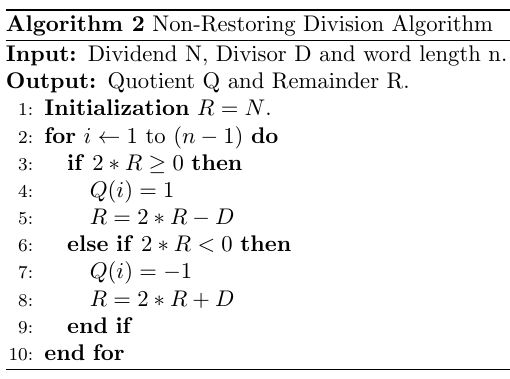
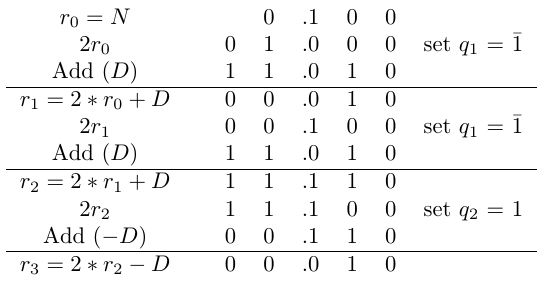

Nonrestoring Division Calculation
The division operation is carried away by assuming fractional numbers. The Non-Restoring division algorithm is shown below. Initially R is set equal to N and n is the data width. The operands are in two’s compliment form where MSB bit is the signed bit. In Non-Restoring divider, quotient take the digit set {-1,1}. At the output, a conversion is needed to get the actual output.
 Non-Restoring Division Algorithm Algorithm
Non-Restoring algorithm is shown with an example. An example of Non-Restoring division is below for N = 0.5 (0.100) and D = -0.75 (1.010). Here n is equal to 4.
 Non-Restoring Division Algorithm Example
Thus the output is 0.q1q2q3 = 0.-1-11. To get the actual output an on-the-fly conversion is needed.
- First mask bits for -1 . That is Q1 = 0.001.
- Then assign Q2 as Q2 = 0.110.
- Subtract Q2 from Q1 to get the actual result. That is Q = 1.011 (-0.625).